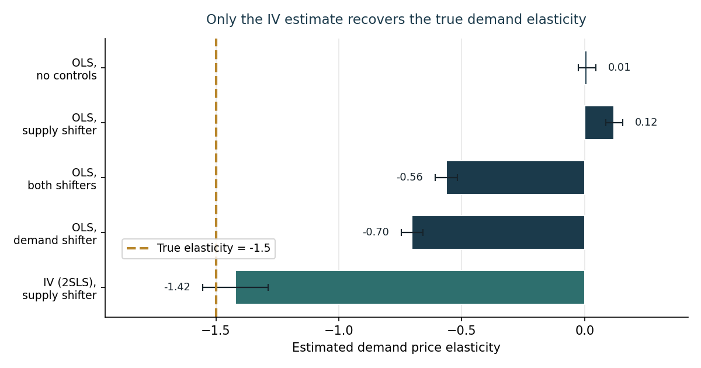

Price Demand Elasticity: Why Your Controls Can’t Save You
Written by AI following my writing style, based on the source notebook.
The objective here is to demonstrate that understanding the identifying variation behind an estimate is crucial for interpretation. The vehicle is a classical economics problem: estimating supply and demand price elasticity.
The setup is a simulation, which means we know the right answer up front — the true demand price elasticity is -1.5 and the true supply elasticity is 0.5. That lets us score every estimation strategy against ground truth, rather than arguing about which one looks more reasonable.
The simulation
I simulate a supply and demand system driven by supply and demand cost shifters, plus unobserved variation in both. A non-linear solver finds the equilibrium price and quantity for each observation, and the unobserved shocks are allowed to correlate with the shifters — which is exactly the situation that makes naive estimation fail.
Then comes the important restriction: suppose we only observe the equilibrium prices, quantities, and shifters. That’s the realistic data situation. What would a naive analyst estimate?
Reduced-form OLS: all wrong
Four OLS specifications, adding controls in the way an analyst normally would:
| Specification | Estimate [SE] |
|---|---|
| No controls | 0.010 [0.036] |
| + supply shifter | 0.120 [0.035] |
| + both shifters | -0.562 [0.045] |
| + demand shifter | -0.702 [0.044] |
| True value | -1.500 |
Every one of them misses, and the first two don’t even get the sign right — they imply demand slopes upward. Adding more controls moves the estimate in the right direction, but “closer to the truth” isn’t the same as “unbiased,” and without knowing the answer you’d have no way to tell how far you still were.
Machine learning doesn’t fix it either
The natural next move is to reach for more flexible models. I ran a random forest regressor with cross-validated hyperparameters (5-fold CV over tree depth, minimum leaf size, and number of estimators), plus some rough feature engineering — indicators for whether the shifters exceed a threshold, and interactions between them.
It doesn’t help. The problem isn’t functional form, and a more flexible conditional expectation of price given quantity doesn’t change that. The observed equilibrium points are generated by both curves moving at once, so no model that just predicts price from quantity — however flexible — can separate movement along the demand curve from movement of the demand curve itself.
Instrumental variables: the identifying variation
The fix is to find variation that moves only one curve. Instrumenting quantity with the supply shifter does exactly this: random variation in supply shifts the supply curve, which traces out points along a fixed demand curve. That’s the “experimental” variation we need — and it recovers -1.420 [0.133], within sampling error of the true -1.5.

Takeaway
The lesson isn’t “IV good, OLS bad.” It’s that the estimator matters less than knowing which variation identifies your parameter. OLS with controls and a tuned random forest are both perfectly competent tools that produce confidently wrong answers here, because neither addresses the simultaneity that generated the data. When the data-generating process has structure — and economic data usually does — a method that imposes that structure will beat a method that ignores it, no matter how flexible the second one is.